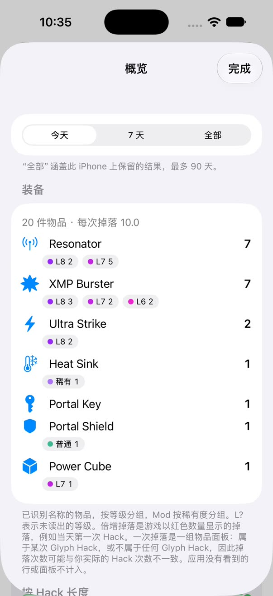
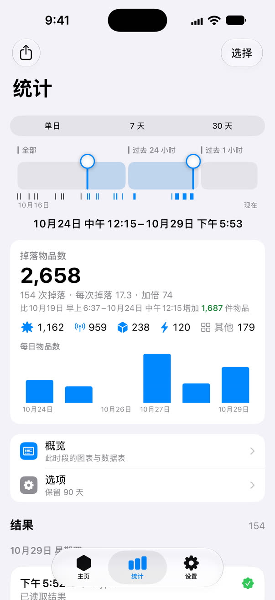
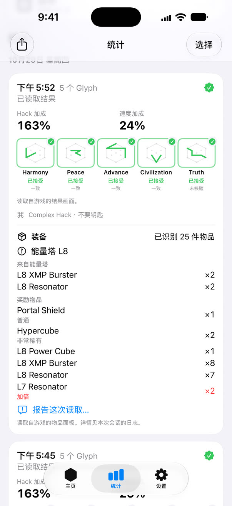
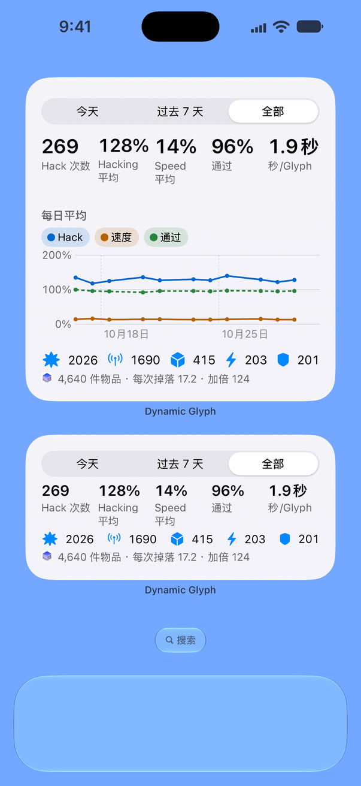

统计掉落装备
每次 Hack 后，应用读取屏幕上的物品面板，按物品、等级和稀有度统计画面中显示的装备。

任意时段，一目了然
可以选择单日、7 天或 30 天，也可以拖动时间轴选择任意时段。「统计」会显示该时段的 Hack 和装备，并按 Hack 长度和指令分类。需要原始数据时，可以将装备读取结果导出为 CSV。

回看已保存的 Hack
保存的 Hack 记录包含加成、游戏判定通过的 Glyph、能量塔等级和装备读取结果。结果最多保留 90 天，上限为 1,000 次 Hack 和 1,000 条掉落记录。

在主屏幕上也能看
主屏幕小组件以三种尺寸显示今天、过去 7 天或全部记录的总计和每日平均。可从控制中心开始或停止，也可以用快捷指令和 Siri 开始、停止或打开「统计」。